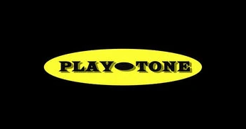
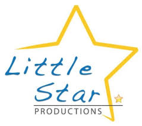

La película Mamma Mia! fue producida por Playtone, Littlestar Productions y Universal Pictures. Este último se encargó de la distribución de la pelicula.

Playtone

La película Mamma Mia! fue producida por Playtone, Littlestar Productions y Universal Pictures. Este último se encargó de la distribución de la pelicula.
En "Mamma Mia!", los efectos especiales se centraron en crear una atmósfera visual vibrante y festiva, utilizando principalmente efectos digitales y de iluminación para resaltar los números musicales y la ambientación de la isla griega. No hubo efectos especiales de tipo "superhéroe" o de fantasía, sino más bien un enfoque en la coreografía y la iluminación para potenciar el espíritu de fiesta de la película.
Fue nominada a varios premios importantes; Golden Globes (2009): Nominada a Mejor Película - Comedia o Musical y Mejor Actriz Principal - Comedia o Musical (Meryl Streep), BAFTA: (2009) Nominada a Mejor Film Británico, Mejor Banda Sonora (Benny Andersson, Björn Ulvaeus) y Mejor Debut de un Escritor, Director o Productor Británico (Judy Craymer). Sin embargo, no ganó ninguno de estos premios.
Mamma Mia! al día de hoy sigue siendo un éxito tanto teatral como social para las nuevas generaciones. La pelicula tuvo un impacto significativo en la cultura popular, convirtiéndose en un clásico del género musical y un referente de la comedia romántica. Claro, no se puede dejar afuera el hecho de que las canciones de ABBA que marcaron una generación y lo siguen haciendo también es en gran parte lo que hace que esta película se siga manteniendo en el tiempo y pase de generación en generación, teniendo una fanbase fiel a la cinta.